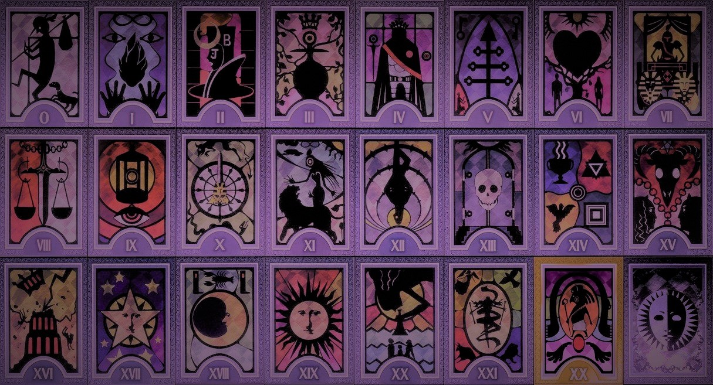
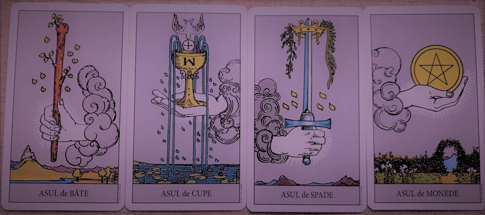

Arcanele
Cartile din tarot se mai numesc și arcane. În total sunt 78 de cărți, împărție în două categorii: arcanele majore-21 și cele minore-57.Fiecare carte ilustrează o scenă, deseori o persoană sau câțiva oameni, cu multe elemente simboliste. În majoritatea seturilor, fiecare carte are număr (deseori cifre romane) și denumire, unele au numai imaginea. Vechile seturi nu aveau nici număr nici nume pe cărțile majore și ordinea cărților nu a fost standardizată.

Arcanele majore
Setul conține 22 de simboluri esoterice: 21 numerotate și una fără numar, numită 0 – Nebunul, reprezentând hazardul. Fiecare arcana majoră posedă o intreagă filosofie proprie, chiar și culorile desenului au înșelesuri ascunse. Astăzi, arcanele majore au dispărut complet din carțile de joc, tocmai datorită incărcăturii lor filosofice și esoterice care nu era la îndemana oricui. Arcanele majore transmit cunoasterea adevărului ocult. Prima arcană majoră, numită Magicianul sau Scamatorul transmite mesajul: „Lumea vizibilă este doar o iluzie.” Desenele Tarotului ascund sensuri profunde. Pe marginea unei arcane majore se poate filosofa multă vreme. Cele 22 de arcane spun,de fapt, povestea omului, a existenței sale pe pământ, de la primii săi pași în voia sorții, până la împlinirea sa totală.
Nebunul, Magicianul, Marea Preoteasa, Împărăteasa, Împăratul, Marele Preot, Îndrăgostiții, Faetonul, Forța, Ermitul, Roata Norocului, Dreptatea, Spânzuratul, Moartea, Echilibrul, Diavolul, Turnul, Steaua, Luna, Soarele, Judecata și Lumea.

Arcanele minore
Arcana Minoră (secrete) constă din 56 cărți, împărțite în patru grupe de 14 cărți fiecare; 10 numerotate și 4 de curte. Cărțile de curte sunt Regele, Regina, Cavalerul și Valetul, în fiecare din patru grupe. Tarotul tradițional italian se împarte în Spade, Bâte, Pentagrame și Cupe.
Batele reprezentate de foc, fac referire la societate si ideea de creativitate si vointa.
Pentagramele sau monedele reprezentate de pamant, fac referire la negustorie/negustori si ideea de bani si posesiuni.
Cupele reprezentate de apa, fac referire la cler si ideea de emotii si iubire.
Spadele reprezentate de aer, fac referire la nobilime si ideea de motiv, cauza.